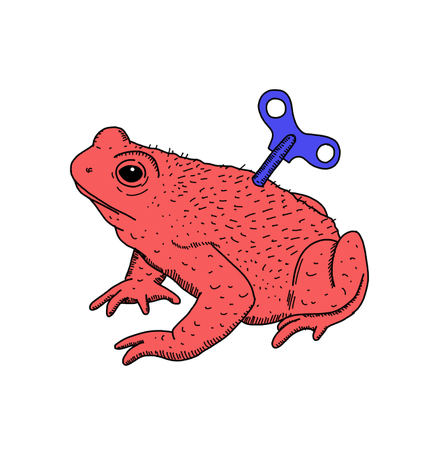

Как создавать визуальный контент
#Иллюстрации

Маша Логинова
Всегда визуализирует контент
Есть информация, которую лучше показать картинкой, чем описать
текстом. Статистика проще воспринимается через инфографику, фото
до/после в формате коллажа, а инструкции в пошаговых видео.
Главная особенность визуального контента — он привлекает и удерживает
внимание читателя сильнее, чем текст.
5 шагов для создания визуального контента: инструкция
Чтобы визуальный контент помогал в продвижении продукта, а не отвлекал пользователей от главного яркой, но бесполезной картинкой, делайте его правильно. Процесс может выглядеть так:
- 1 Напишите план статьи и подумайте, что лучше показать визуально. Картинки ради картинок добавлять не нужно.
- 2 Определитесь с форматом визуального контента: фото, видео, иллюстрация, отформатированный текст, инфографика или мем.
- 3 Подумайте сможете ли сделать визуал самостоятельно или придется искать дизайнера. Если понадобится помощь, не откладывайте поиск, чтобы не сорвать дедлайн.
- 4 Пишите статью и оформляйте необходимый визуальный контент. Например, если нужны фотографии или гифки, воспользуйтесь стоками. Для инфографики и мемов используйте Figma. Не забудьте подписывать изображения.
- 5 Добавляйте визуальный контент в статью и делайте пометки верстальщику, если это необходимо. Например, если изображений много, лучше оформить их а галерею, а гифки должны проигрываться автоматически. Не забудьте создать папку с визуалом в гугл доке и открыть к нему доступ.
Коротко. Как сделать хороший визуальный контент
- Иллюстрируйте главную мысль статьи или ее части, а не просто разбавляйте текст картинками.
- Используйте реальные фотографии, а не постановочные с натянутыми улыбками и неестественными позами.
- Откажитесь от векторных картинок из гугл-поиска: они неинформативны, а еще так легко нарушить авторские права.
- Подписывайте иллюстрации: это тоже часть визуального повествования.
- Показывайте процесс с помощью видео, а еще лучше гифок.
- Используйте коллажи, чтобы показать «до-после» или что-то сравнить.
- Переносите важные цифры и другие сложные данные в инфографику. Сделать ее можно самостоятельно в графических редакторах, например, Figma.
- Сделайте текстовые примеры и цитаты частью визуального контента: выделите их цветной плашкой, другим кеглем или начертанием или отбивкой слева.
- Не бойтесь использовать мемы даже для сложных и серьезных тем, например, финансов или бизнеса. Это удерживает внимание читателя и делает информацию доступнее.
Что еще почитать
Как сделать качественный скриншот: инструкция
#Иллюстрации
Как использовать Яндекс.Метрику в контент-маркетинге
#Аналитика
Как написать хороший лонгрид: инструкция
#Статьи
Как написать текст для главной страницы сайта
#Сайты
Как сделать качественный скриншот: инструкция
Начни осваивать копирайтинг с нашего бесплатного гайда